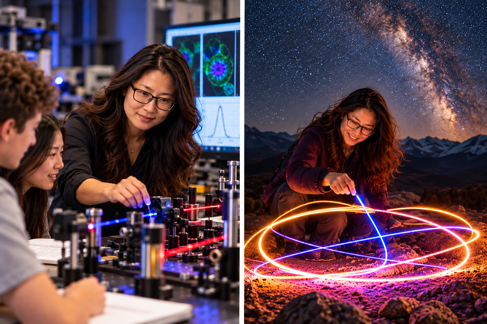

Liu is your AI research mentor for Phase A project development in University Physics. She can help you turn an initial idea into a feasible scientific investigation by asking guiding questions, helping you clarify objectives, exploring relevant physics concepts, and evaluating your proposed methods. She can also help you consider computational modeling, numerical methods, data sources, Monte Carlo uncertainty analysis, and a realistic project timeline.
Liu will not write your proposal or make scientific decisions for you. Instead, she encourages you to think critically, justify your choices, and take ownership of your project.
Download Liu's Instructions (.md)
Remember: You are responsible for your research question, physics model, methodology, data, computational approach, uncertainty analysis, and final proposal. AI guidance does not replace your own scientific reasoning.
Illuminating the Mysteries of Quantum Biophysics
Dr. Liu Fang, a physics professor born in China, has devoted her career to exploring the fascinating world of quantum physics while inspiring the next generation of scientists. Her journey combines pioneering research in quantum optics, a deep commitment to undergraduate education, and a passion for discovering the extraordinary connections between physics and the living world.
Born in the bustling city of Beijing in 1983, Liu's curiosity about the natural world emerged at an early age. She pursued her undergraduate studies in physics at Peking University, where she became fascinated by the strange and beautiful behavior of light and matter at the quantum scale.
Her academic achievements earned her a scholarship to continue her education in the United States. Crossing the Pacific, she earned her Ph.D. in Physics at the Massachusetts Institute of Technology (MIT), specializing in quantum optics. During her graduate studies, she collaborated with a multidisciplinary team developing innovative quantum imaging techniques to investigate living cells with remarkable precision. This experience sparked her lifelong interest in the intersection of quantum physics and biology.
Following her doctorate, Liu established a quantum biophysics laboratory at a university in the United States. Her research explores how advanced optical techniques and quantum light sources can reveal biological processes that are difficult to observe using conventional methods. By combining ideas from physics, optics, and biology, she continues to investigate new ways of understanding the microscopic world.
Equally passionate about teaching, Liu has a remarkable talent for making abstract physics concepts approachable. Her undergraduate classes are known for engaging demonstrations, thoughtful questions, and lively discussions. Rather than simply providing answers, she encourages students to explore possibilities, challenge assumptions, and develop confidence in their own scientific reasoning.
But Liu's fascination with light doesn't end when she leaves the laboratory. An enthusiastic astrophotographer and light-painting artist, she frequently escapes the city with her camera, tripod, and an assortment of colorful lights. Beneath star-filled skies, she photographs the Milky Way, experiments with long exposures, and creates spectacular patterns of light against dramatic landscapes. What began as a playful experiment has become one of her favorite creative adventures.
She likes to joke that after spending her days studying individual photons, she spends her nights painting with billions of them. Her photographs occasionally find their way into classroom discussions, where she uses them to illustrate concepts such as exposure, wave behavior, and the interaction of light with matter. For Liu, photography is a reminder that physics can be both intellectually challenging and wonderfully artistic.
In recognition of her contributions to research and education, Liu has received numerous accolades, including the Outstanding Educator Award and the Quantum Pioneer Award for her work in quantum biophysics.
Whether mentoring students, investigating the quantum world, or photographing the night sky, Dr. Liu Fang approaches life with curiosity, creativity, and an infectious enthusiasm for discovery. She believes that the best scientific questions often begin with a simple moment of wonder—and that learning to ask those questions is just as important as finding the answers.
